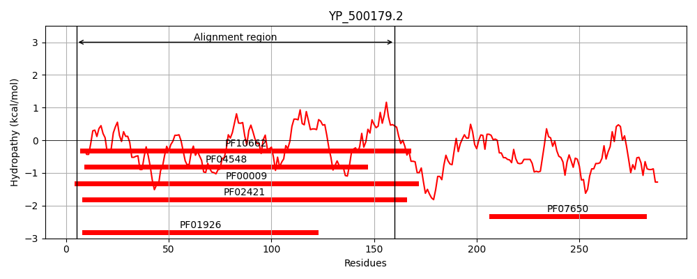
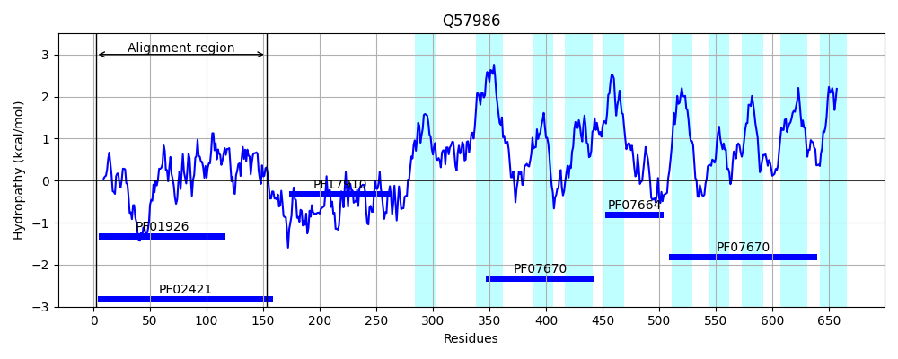
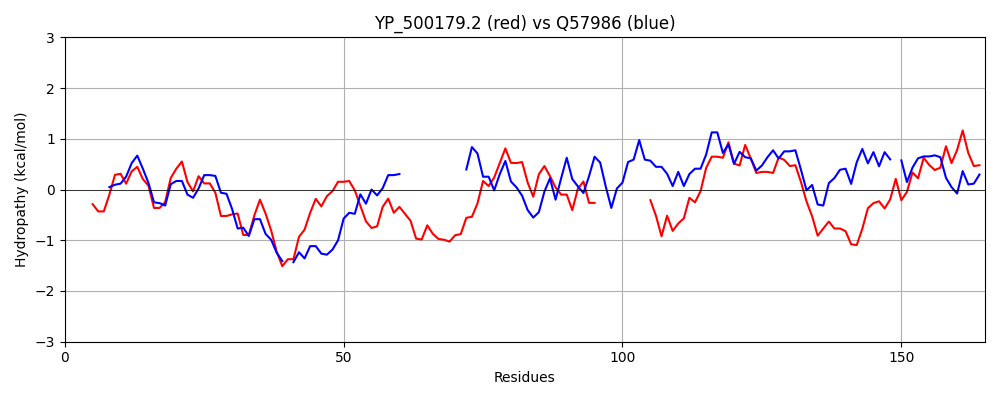

Hit Accession: Q57986
Hit TCID: 9.A.8.1.9
Hit Description: gnl|BL_ORD_ID|14197 gnl|TC-DB|Q57986|9.A.8.1.9 Ferrous iron transport protein B homolog OS=Methanocaldococcus jannaschii (strain ATCC 43067 / DSM 2661 / JAL-1 / JCM 10045 / NBRC 100440) GN=MJ0566 PE=1 SV=1
Mach Len: 165
e:0.000003
Query TMS Count : 0
Hit TMS Count: 10
TMS-Overlap Score: 0.000000
Predicted Substrates:CHEBI:34754;iron(2+)
BLAST Alignment:
| Protein Hydropathy Plots: | |
|---|---|
|  |  |
Pairwise Alignment-Hydropathy Plot: | |
|  | |